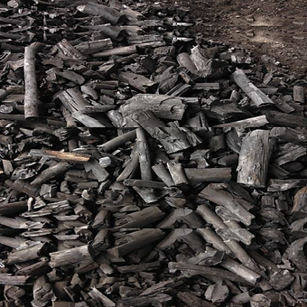
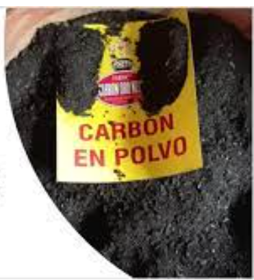
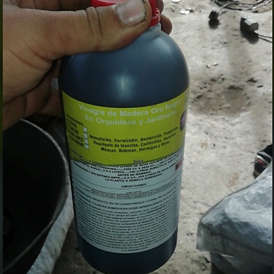

Carbón Parillero

Está hecho a base de maderas semi duras, como naranja, guayabo, teca, madero negro, entre otras, con lo cual se garantiza durabilidad y fácil encendido.
Propiedades
La humedad del carbón es de solamente un 3%, lo que produce una generación mínima de humo.
Presentaciones a la venta
Se vende en presentaciones de 2 kilos la bolsa y 20 kilos el saco.
Polvo de Carbón

Este producto es especial para la realización de abonos orgánicos como el bocache para nuestros cultivos.
También, es conocido como Biochard, el cual se puede mezclar con la tierra en una proporción de 30% de polvo de carbón con un 70% de tierra, esto no permite que la tierra se compacte, a la vez que le da riqueza y aporta fósforo y magnecio a la misma.
Presentaciones a la venta
A la venta en sacos de aproximadamente 35 kilos.
Vinagre de Carbón

Está hecho a base de maderas semi duras, como naranja, guayabo, teca, madero negro, entre otras, con lo cual se garantiza durabilidad y fácil encendido.
Propiedades
La humedad del carbón es de solamente un 3%, lo que produce una generación mínima de humo.
Presentaciones a la venta
Se vende en presentaciones de 2 kilos la bolsa y 20 kilos el saco.